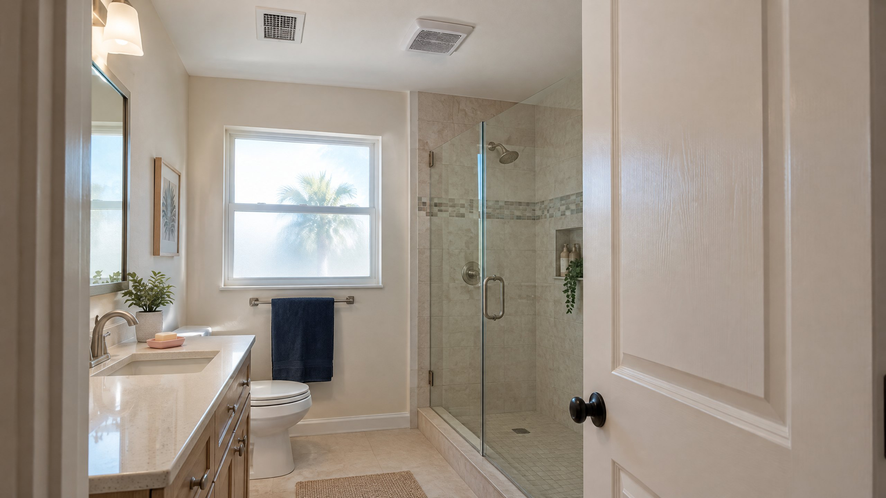

A cool bathroom is not necessarily a bathroom that has cleared its shower moisture. If you leave the exhaust fan off because the AC is running, the two systems are being treated as interchangeable. They are not: local exhaust addresses moisture where bathing releases it. EPA recommends running the bathroom fan when showering, and national-laboratory guidance recommends bathroom exhaust regardless of the ventilation arrangement in the rest of the home. [1] [2]
What does the bathroom exhaust fan do that cooling does not?
A properly connected bathroom fan moves room air through an exhaust duct to the exterior. Its job is to remove moisture and odors from that room, rather than wait for them to be managed elsewhere. PNNL describes this as local exhaust and recommends an outdoor discharge—not simply moving bathroom air into another indoor space. [2]
Air conditioning can help manage indoor humidity, but that does not eliminate the need to address a concentrated moisture source. EPA lists air conditioners and dehumidifiers alongside bathroom exhaust as moisture-control measures, not as a reason to skip shower ventilation. A comfortable thermostat reading alone does not establish that bathroom ventilation is working. [1]
For the broader distinction between cooling and outdoor-air exchange, see whether central AC brings fresh air into a home. This question is narrower: how to handle the moisture generated by a shower.
When should you use the fan?
Use a functioning bathroom exhaust fan during showering. For an intermittently operated fan, use the installed timer or humidity controls as instructed so exhaust can continue after the shower; do not assume that switching off the light should also end moisture removal. PNNL's bathroom exhaust guide recommends timer-controlled post-shower operation. Confirm the intended runtime and controls for your installation rather than treating a clearer mirror as a measured ventilation result. [1] [2]
If the fan is unusually noisy, stops operating or no longer handles moisture as it previously did, ask for an assessment instead of extending the timer indefinitely. Motor operation, controls and the exhaust route all matter. A fan that sounds busy can still have inadequate installed airflow. [2]
Does that mean leaving every bathroom fan on all day?
No blanket all-day instruction fits every home. Some bathroom fans provide occupant-controlled spot exhaust; others have a documented continuous ventilation role or different speeds for different purposes. PNNL distinguishes these arrangements and calls for clearly identified controls when a bathroom fan is part of whole-house ventilation. [2] [3]
That distinction matters in a Tampa home: exhausting air also requires replacement air, and the intended ventilation arrangement deserves attention—not an assumption that more runtime always improves the house. Do not disconnect, disable or reprogram a designated continuous system to save conditioned air. Have its purpose explained first. For an ordinary spot fan, follow the documented shower and post-shower use rather than turning it into an improvised whole-home system. [3]
Where must the humid exhaust air go?
The exterior destination matters as much as the visible grille. Both PNNL references say bathroom exhaust should discharge outdoors, not into an attic, crawlspace or space between floors. An exhaust grille in the ceiling does not establish where the hidden duct ends. [2] [3]
If you do not know the route, ask a qualified professional to verify it. Do not enter an attic, climb onto a roof or open electrical parts to trace it yourself. The review should identify the exterior termination, duct condition and damper operation. A loose, obstructed or poorly routed connection is not corrected merely by changing the wall switch. [2]
What can you observe without dismantling anything?
Describe patterns from ordinary use: whether the fan actually starts, whether the timer stays on after the light is off, whether the problem follows showers, and whether dampness is localized or appears in other rooms. These observations guide an assessment; none confirms a specific failed component or mold condition.
| What you notice | What it helps clarify | What to ask next |
|---|---|---|
| Moisture mostly follows showers | A concentrated bathroom source | Confirm exhaust use, controls and actual outdoor airflow |
| Fan is audible but drying behavior changed | Operation alone does not prove performance | Have airflow, duct route and exterior termination checked |
| Wet ceiling, staining or water outside shower use | A water problem may need separate attention | Have the water source assessed promptly, rather than assuming steam |
| Several rooms feel damp and cooling changed | The issue may extend beyond local exhaust | Assess cooling and moisture sources together |
Dry accessible wet surfaces and report persistent moisture or water damage promptly. EPA emphasizes fixing the moisture source. Mirror fog is not a mold test, and stains or dripping water should not automatically be attributed to inadequate fan runtime. [1]
What should a professional exhaust assessment establish?
Ask for more than a statement that the fan turns on. Useful findings include measured installed airflow, the actual outdoor discharge, duct routing and condition, damper function, and the intended control sequence. PNNL notes that ducts and termination choices can reduce airflow below a fan's factory rating; its installation checklist calls for airflow measurement and review of operation and maintenance. [2] [3]
If cooling is also weak or changed, request AC repair assessment rather than assuming the bathroom fan explains the entire problem. If moisture persists throughout the home after local sources and existing equipment are evaluated, our whole-home dehumidifier versus AC guide explains that separate decision. Buying another appliance does not verify the bathroom exhaust route.
Frequently Asked Questions
Can the AC replace a bathroom exhaust fan?
No. Cooling and local shower exhaust have different jobs. EPA recommends bathroom fan use when showering, while PNNL recommends bathroom exhaust regardless of the rest of the home's ventilation system. A cool room alone does not demonstrate adequate moisture removal.
Do I need bathroom exhaust if the room has a window?
PNNL advises against relying on operable windows for consistent bathroom ventilation. A window does not verify that the exhaust fan works or discharges outdoors. Ask for a documented local-exhaust arrangement instead of treating a window as its replacement.
Should a humidity-sensing bathroom fan run continuously?
Not necessarily. A humidity sensor, timer or multiple-speed control must be understood in the context of the installed fan's purpose. Spot exhaust and continuous whole-house ventilation are different arrangements. Follow the documented controls and do not disable a designated ventilation system.
Does a noisy fan prove it is removing shower moisture?
No. Sound confirms neither the outdoor discharge nor sufficient installed airflow. Duct condition, routing, exterior termination and dampers affect performance. Have those checked and airflow measured if moisture persists or fan behavior changes.
Sources
- EPA: A Brief Guide to Mold, Moisture and Your Home — source moisture, bathroom fan use during showering and water-problem response.
- PNNL Building America Solution Center: Bathroom Exhaust Fans — local exhaust, controls, outdoor termination and installed airflow.
- DOE/PNNL Home Improvement Expert: Bathroom Exhaust Fan — spot versus continuous operation, commissioning and maintenance review.
Editorial Source Review & Publisher
Published by On The Way Heating & Air for Tampa and North Tampa homeowners. This article explains local shower-moisture exhaust using the references above. It is not an airflow measurement, installation certification, mold diagnosis or substitute for assessment of a persistent water or cooling problem.